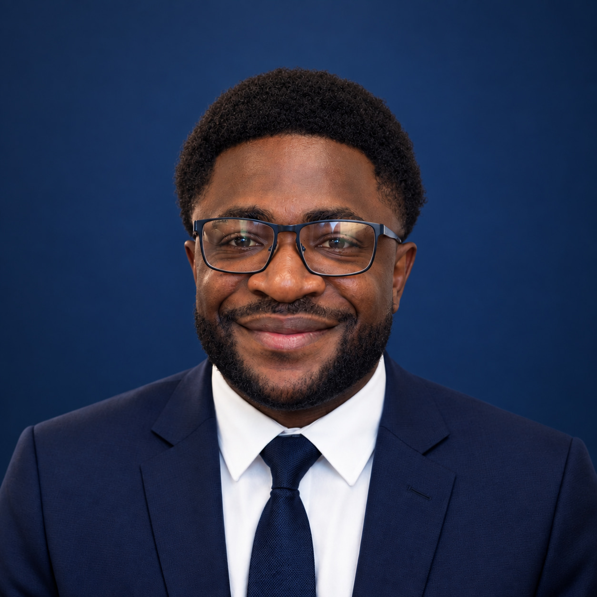

Land subsidence
Measuring sinking coastlines
Satellite SAR interferometry (InSAR) to quantify subsidence along the Gulf of Guinea and link it to land-use change, urban expansion, and subsurface geology.
See research outcomesEnvironmental Engineer. Researcher. Sustainability Advocate
I am an Environmental Engineer and Scientist working at the intersection of climate resilience, water security, and sustainable development. My research explores environmental and climate risks facing vulnerable African communities and cities, connecting science, policy, and development to translate knowledge into resilient solutions for Africa.

Open to collaborations, speaking invitations and research partnerships. Say hello →
Featured Activities
I am an Environmental Engineer from Cameroon, and I have completed my Ph.D. at the University of Padova (DICEA). My work covers sustainability strategy, environmental analytics, and water and groundwater sustainability.
I want to help emerging economies, where institutional and technical voids slow progress, turn knowledge into action. I am complementing my engineering background with public policy, strategic management, and international management.
True power now lies in the ability to learn continuously, access relevant information, and use it effectively and sustainably.— Gergino Chounna Yemele
Satellite SAR interferometry (InSAR) to quantify subsidence along the Gulf of Guinea and link it to land-use change, urban expansion, and subsurface geology.
See research outcomesAssessing how many people and assets along the Gulf of Guinea are exposed to elevation-based risk now and by 2050.
See research outcomesSite-specific numerical and deep learning models, and mitigation strategies for Cameroon and similar coastal regions.
See research outcomesI want to contribute to a more sustainable and decent world through scientific research and development, improving access to water, energy, and education. I also work to reduce the under-representation of scientists in the water sector and in adaptation to geo-environmental hazards.
Since 2022, I have represented the Rural Water Supply Network on the UNESCO Groundwater Youth Network steering committee, where I have chaired the communication committee and contributed to amplifying the voice of young water professionals at high-level international summits.
Affiliations & networks
I welcome collaborations, speaking invitations, and conversations about water, coastal resilience, and sustainable development in Africa.